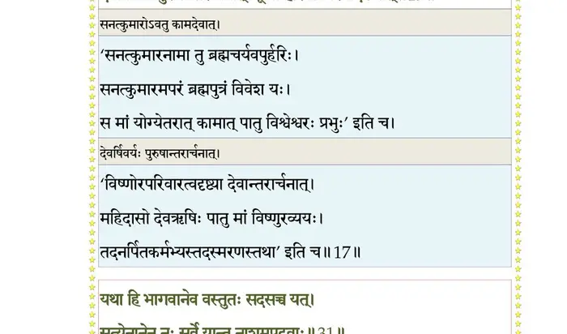
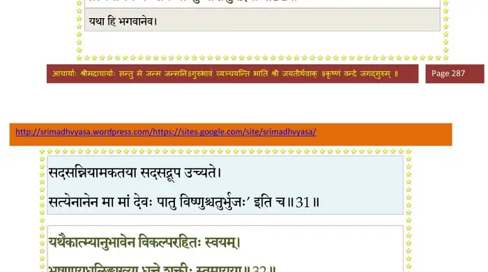
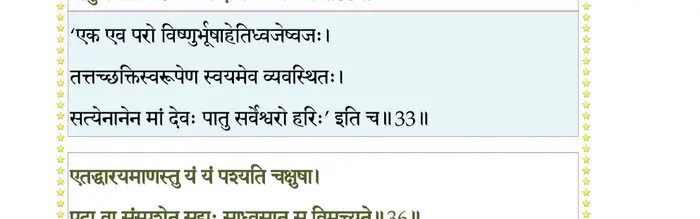
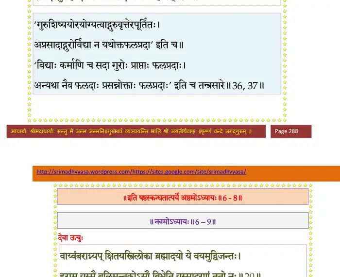

स्कन्ध 6 · अध्याय 8
श्लोक १
राजोवाच–
यया गुप्तः सहस्राक्षः सवाहान् रिपुसैनिकान् ।
क्रीडन्निव विनिर्जित्य त्रैलोक्यां बुभुजे श्रियम्।। १ ।।
यया गुप्तः सहस्राक्षः सवाहान् रिपुसैनिकान् ।
क्रीडन्निव विनिर्जित्य त्रैलोक्यां बुभुजे श्रियम्।। १ ।।
श्लोक २
भगवंस्तन्ममाख्याहि वर्म नारायणात्मकम् ।
यथाऽऽततायिनः शत्रून् येन गुप्तोऽजयन्मृधे।। २ ।।
यथाऽऽततायिनः शत्रून् येन गुप्तोऽजयन्मृधे।। २ ।।
श्लोक ३
श्रीशुक उवाच–
वृतः पुरोहितस्त्वाष्ट्रो महेन्द्रायानुपृच्छते ।
नारायणाख्यं वर्माह तदिहैकमनाः शृृणु।। ३ ।।
वृतः पुरोहितस्त्वाष्ट्रो महेन्द्रायानुपृच्छते ।
नारायणाख्यं वर्माह तदिहैकमनाः शृृणु।। ३ ।।
श्लोक ४
विश्वरूप उवाच–
धौताङ्घ्रिपाणिराचम्य सपवित्र उदङ्मुखः ।
कृतस्वाङ्गकरन्यासो मन्त्राभ्यां वाग्यतः शुचिः।। ४ ।।
धौताङ्घ्रिपाणिराचम्य सपवित्र उदङ्मुखः ।
कृतस्वाङ्गकरन्यासो मन्त्राभ्यां वाग्यतः शुचिः।। ४ ।।
श्लोक ५
नारायणमयं वर्म सन्नह्येद् भय आगते ।
दैवभूतात्मकर्मभ्यो नारायणमयः पुमान्।। ५ ।।
दैवभूतात्मकर्मभ्यो नारायणमयः पुमान्।। ५ ।।
श्लोक ६
पादयोर्जानुनोरूर्वोरुदरे हृद्यथोरसि ।
मुखे शिरस्यानुपूर्व्यादोङ्कारादीनि विन्यसेत्।। ६ ।।
मुखे शिरस्यानुपूर्व्यादोङ्कारादीनि विन्यसेत्।। ६ ।।
श्लोक ७
ओं नमो नारायणायेति विपर्ययमथापि वा ।
करन्यासं ततः कुर्याद् द्वादशाक्षरविद्यया।। ७ ।।
करन्यासं ततः कुर्याद् द्वादशाक्षरविद्यया।। ७ ।।
श्लोक ८
प्रणवादियकारान्तमङ्गुल्यंगुष्ठपर्वसु ।
न्यसेद्धृदय ओङ्कारं विकारमनु मूर्धनि।। ८ ।।
न्यसेद्धृदय ओङ्कारं विकारमनु मूर्धनि।। ८ ।।
श्लोक ९
षकारं तु भ्रुवोर्मध्ये णकारं शिखया दिशेत् ।
वेकारं नेत्रयोर्युञ्ज्यान्नकारं सर्वसन्धिषु।। ९ ।।
वेकारं नेत्रयोर्युञ्ज्यान्नकारं सर्वसन्धिषु।। ९ ।।
श्लोक १०
मकारमस्त्रमुद्दिश्य मन्त्रमूर्तिर्भवेद् बुधः ।
सविसर्गं फडन्तं तु सर्वदिक्षु विनिर्दिशेत्।। १० ।।
सविसर्गं फडन्तं तु सर्वदिक्षु विनिर्दिशेत्।। १० ।।
श्लोक ११
‘ओं विष्णवे नमः’
इत्यात्मानं परं ध्यायेद् ध्येयं षट्शक्तिभिर्युतम् ।
विद्यातेजस्तपोमूर्तिरिमं मन्त्रमुदाहरेत्।। ११ ।।
इत्यात्मानं परं ध्यायेद् ध्येयं षट्शक्तिभिर्युतम् ।
विद्यातेजस्तपोमूर्तिरिमं मन्त्रमुदाहरेत्।। ११ ।।
श्लोक १२
ओं ।। हरिर्विदध्यान्मम सर्वरक्षां न्यस्ताङ्घ्रिपद्मः पतगेन्द्रपृष्ठे ।
दरारिचर्मासिगदेषुचापपाशान् दधानोऽष्टगुणोऽष्टबाहुः।। १२ ।।
दरारिचर्मासिगदेषुचापपाशान् दधानोऽष्टगुणोऽष्टबाहुः।। १२ ।।
श्लोक १३
जलेषु मां रक्षतु मत्स्यमूर्तिर्यादोगणेभ्यो वरुणस्य पाशात् ।
स्थले च मायावटुवामनोऽव्यात् त्रिविक्रमः खेऽवतु विश्वरूपः।।१३
दुर्गेष्वटव्याजिमुखादिषु प्रभुः पायान्नृसिंहोऽसुरयूथपारिः ।
विमुञ्चतो यस्य महाट्टहासं दिशो विनेदुर्न्यपतंश्च गर्भाः।। १३ ।।
स्थले च मायावटुवामनोऽव्यात् त्रिविक्रमः खेऽवतु विश्वरूपः।।१३
दुर्गेष्वटव्याजिमुखादिषु प्रभुः पायान्नृसिंहोऽसुरयूथपारिः ।
विमुञ्चतो यस्य महाट्टहासं दिशो विनेदुर्न्यपतंश्च गर्भाः।। १३ ।।
श्लोक १५
रक्षत्वसौ माऽध्वनि यज्ञकल्पः स्वदंष्ट्रयोन्नीतधरो वराहः ।
रामोऽद्रिकूटेष्वथ विप्रवासे सलक्ष्मणोऽव्याद् भरताग्रजो माम्।।१५।।
रामोऽद्रिकूटेष्वथ विप्रवासे सलक्ष्मणोऽव्याद् भरताग्रजो माम्।।१५।।
श्लोक १७
मामुग्रधन्वा अखिलप्रमादान्नारायणः पातु नरश्च हासात् ।
दत्तस्त्वयोगादथ योगनाथः पायाद् गुणेशः कपिलः कर्मबन्धात्।।१६
सनत्कुमारोऽवतु कामदेवाद्धयशीर्षो मां पथि देवहेलनात् ।
देवर्षिवर्यः पुरुषान्तरार्चनात् कूर्मो हरिर्मां निरयादशेषात्।। १७ ।।
दत्तस्त्वयोगादथ योगनाथः पायाद् गुणेशः कपिलः कर्मबन्धात्।।१६
सनत्कुमारोऽवतु कामदेवाद्धयशीर्षो मां पथि देवहेलनात् ।
देवर्षिवर्यः पुरुषान्तरार्चनात् कूर्मो हरिर्मां निरयादशेषात्।। १७ ।।
भागवततात्पर्यनिर्णय

श्लोक १८
धन्वन्तरिर्भगवान् पात्वपथ्याद् द्वन्द्वाद् भयाद् ऋषभो निर्जितात्मा ।
यज्ञश्च लोकादुत तत्कृतान्नो बलो गणात् क्रोधवशादहीन्द्रः।। १८ ।।
यज्ञश्च लोकादुत तत्कृतान्नो बलो गणात् क्रोधवशादहीन्द्रः।। १८ ।।
श्लोक १९
द्वैपायनो भगवानप्रबोधाद् बुद्धस्तु पाषण्डगणात् प्रमादात् ।
कल्की कलेः कालमलात् प्रपातु धर्मावनायोरुकृतावतारः।। १९ ।।
कल्की कलेः कालमलात् प्रपातु धर्मावनायोरुकृतावतारः।। १९ ।।
श्लोक २०
मां केशवो गदया प्रातरव्याद् गोविन्द आसङ्गव आत्तवेणुः ।
नारायणः पातु सदाऽऽत्तशक्तिर्मध्यन्दिने विष्णुररीन्द्रपाणिः।। २० ।।
नारायणः पातु सदाऽऽत्तशक्तिर्मध्यन्दिने विष्णुररीन्द्रपाणिः।। २० ।।
श्लोक २१
देवोऽपराण्हे मधुहोग्रधन्वा सायं त्रिधामाऽवतु माधवो माम् ।
दोषे हृषीकेश उतार्धरात्रे निशीथ एकोऽवतु पद्मनाभः।। २१ ।।
दोषे हृषीकेश उतार्धरात्रे निशीथ एकोऽवतु पद्मनाभः।। २१ ।।
श्लोक २२
श्रीवत्सलक्ष्माऽपररात्र ईशः प्रत्यूष ईशोऽसिधरो जनार्दनः ।
दामोदरोऽव्यादनुसन्ध्यं प्रभाते विष्णुः श्रीमान् भगवान् कालमूर्तिः।। २२ ।।
दामोदरोऽव्यादनुसन्ध्यं प्रभाते विष्णुः श्रीमान् भगवान् कालमूर्तिः।। २२ ।।
श्लोक २३
चक्रं युगान्तानलतिग्मनेमि भ्रमत् समान्ताद् भगवत्प्रयुक्तम् ।
दन्दग्धि दन्दग्ध्यरिसैन्यमाशु कक्षं यथा वातसखो हुताशः।। २३ ।।
दन्दग्धि दन्दग्ध्यरिसैन्यमाशु कक्षं यथा वातसखो हुताशः।। २३ ।।
श्लोक २४
गदेऽशनिस्पर्शनविस्फुलिङ्गे निष्पिण्ढि निष्पिण्ढ्यजितप्रियाऽसि ।
कूष्माण्डवैनायकयक्षरक्षोभूतग्रहांश्चूर्णय चूर्णयारीन्।। २४ ।।
कूष्माण्डवैनायकयक्षरक्षोभूतग्रहांश्चूर्णय चूर्णयारीन्।। २४ ।।
श्लोक २५
त्वं यातुधानप्रमथप्रेतमातृपिशाचविप्रग्रहघोरदृष्टीन् ।
दरेन्द्र विद्रावय कृष्णपूरितो भीमस्वनोऽरीन् हृदयानि कम्पयन् ।।२५।।
दरेन्द्र विद्रावय कृष्णपूरितो भीमस्वनोऽरीन् हृदयानि कम्पयन् ।।२५।।
श्लोक २६
त्वं तिग्मधारासिवरारिसैन्यमीशप्रयुक्तो मम छिन्धि छिन्धि ।
चक्षूंषि चर्मंञ्छतचन्द्र छादय द्विषामघं नो हर पापचक्षुषाम्।।२६।।
चक्षूंषि चर्मंञ्छतचन्द्र छादय द्विषामघं नो हर पापचक्षुषाम्।।२६।।
श्लोक २७
यं नो भयं ग्रहेभ्योऽभूत् केतुभ्यो नृभ्य एव च ।
सरीसृपेभ्यो दंष्ट्रिभ्यो भूतेभ्योऽघेभ्य एव च।। २७ ।।
सरीसृपेभ्यो दंष्ट्रिभ्यो भूतेभ्योऽघेभ्य एव च।। २७ ।।
श्लोक २८
सर्वाण्येतानि भगवन्नामरूपास्त्रकीर्तनात् ।
प्रयान्तु सङ्क्षयं सद्यो येऽन्ये श्रेयःप्रतीपकाः।। २८ ।।
प्रयान्तु सङ्क्षयं सद्यो येऽन्ये श्रेयःप्रतीपकाः।। २८ ।।
श्लोक २९
गरुडो भगवांस्तोत्रस्तोमच्छन्दोमयः प्रभुः ।
रक्षत्वशेषकृच्छ्रेभ्यो विष्वक्सेनः स्वनामभिः।। २९ ।।
रक्षत्वशेषकृच्छ्रेभ्यो विष्वक्सेनः स्वनामभिः।। २९ ।।
श्लोक ३०
सर्वापद्भ्यो हरेर्नामरूपयानायुधानि नः ।
बुद्धीन्द्रियमनःप्राणान् पान्तु पार्षदभूषणाः।। ३० ।।
बुद्धीन्द्रियमनःप्राणान् पान्तु पार्षदभूषणाः।। ३० ।।
श्लोक ३१
यथा हि भगवानेव वस्तुतः सदसच्च यत् ।
सत्येनानेन नः सर्वे यान्तु नाशमुपद्रवाः।। ३१ ।।
सत्येनानेन नः सर्वे यान्तु नाशमुपद्रवाः।। ३१ ।।
भागवततात्पर्यनिर्णय

श्लोक ३२
यथैकात्म्यानुभावेन विकल्परहितः स्वयम् ।
भूषणायुधलिङ्गाख्या धत्ते शक्तीः स्वमायया।। ३२ ।।
भूषणायुधलिङ्गाख्या धत्ते शक्तीः स्वमायया।। ३२ ।।
भागवततात्पर्यनिर्णय
श्लोक ३३
तेनैव सत्यमानेन सर्वज्ञो भगवान् हरिः ।
पातु सर्वैः स्वरूपैर्नः सदा सर्वत्र सर्वगः।। ३३ ।।
पातु सर्वैः स्वरूपैर्नः सदा सर्वत्र सर्वगः।। ३३ ।।
भागवततात्पर्यनिर्णय

श्लोक ३४
विदिक्षु दिक्षूर्ध्वमधः समन्तादन्तर्बहिर्भगवान् नारसिंहः ।
प्रहापयल्लोकभयं स्वनेन स्वतेजसा ग्रस्तसमस्ततेजाः।। ३४ ।।
प्रहापयल्लोकभयं स्वनेन स्वतेजसा ग्रस्तसमस्ततेजाः।। ३४ ।।
श्लोक ३५
मघवन्निदमाख्यातं वर्म नारायणात्मकम् ।
विजेष्यस्यञ्जसा येन दंशितोऽसुरयूथपान्।। ३५ ।।
विजेष्यस्यञ्जसा येन दंशितोऽसुरयूथपान्।। ३५ ।।
श्लोक ३६
एतद् धारयमाणस्तु यो यः पश्यति चक्षुषा ।
पदा वा संस्पृशेत् सद्यः साध्वसात् स विमुच्यते।। ३६ ।।
पदा वा संस्पृशेत् सद्यः साध्वसात् स विमुच्यते।। ३६ ।।
भागवततात्पर्यनिर्णय
श्लोक ३७
न कुतश्चिद् भयं तस्य विद्यां धारयतो भवेत् ।
राजदस्युग्रहादिभ्यो व्याध्यादिभ्यश्च कर्हिचित्।। ३७ ।।
राजदस्युग्रहादिभ्यो व्याध्यादिभ्यश्च कर्हिचित्।। ३७ ।।
भागवततात्पर्यनिर्णय

श्लोक ३८
इमां विद्यां पुरा कश्चित् कौशिको धारयन् द्विजः ।
योगधारणया स्वाङ्गं जहौ स मरुधन्वनि।। ३८ ।।
योगधारणया स्वाङ्गं जहौ स मरुधन्वनि।। ३८ ।।
श्लोक ३९
तस्योपरि विमानेन गन्धर्वपतिरेकदा ।
ययौ चित्ररथः स्त्रीभिर्वृतो यत्र द्विजक्षयः।। ३९ ।।
ययौ चित्ररथः स्त्रीभिर्वृतो यत्र द्विजक्षयः।। ३९ ।।
श्लोक ४०
साङ्गनो न्यपतत् सद्यः सविमानो ह्यवाक्शिराः ।
(विद्यामिमां धारयतो मृतस्यास्थिविलङ्घनात्)।। ४० ।।
(विद्यामिमां धारयतो मृतस्यास्थिविलङ्घनात्)।। ४० ।।
श्लोक ४१
स वालखिल्यवचनादस्थीन्यादाय विस्मितः ।
प्रास्य प्राचीसरस्वत्यां स्नात्वा धाम स्वमन्वगात्।। ४१ ।।
प्रास्य प्राचीसरस्वत्यां स्नात्वा धाम स्वमन्वगात्।। ४१ ।।
श्लोक ४२
य इदं शृणुयात् काले यो धारयति चादृतः ।
तं नमस्यन्ति भूतानि मुच्यते सर्वतो भयात्।। ४२ ।।
तं नमस्यन्ति भूतानि मुच्यते सर्वतो भयात्।। ४२ ।।
श्लोक ४३
एतां विद्यामधिगतो विश्वरूपाच्छतक्रतुः ।
त्रैलोक्यलक्ष्मीं बुभजे विनिर्जित्य मृधेऽसुरान्।। ४३ ।।
त्रैलोक्यलक्ष्मीं बुभजे विनिर्जित्य मृधेऽसुरान्।। ४३ ।।
।। इति श्रीमद्भागवते षष्ठस्कन्धेऽष्टमोऽध्यायः ।।